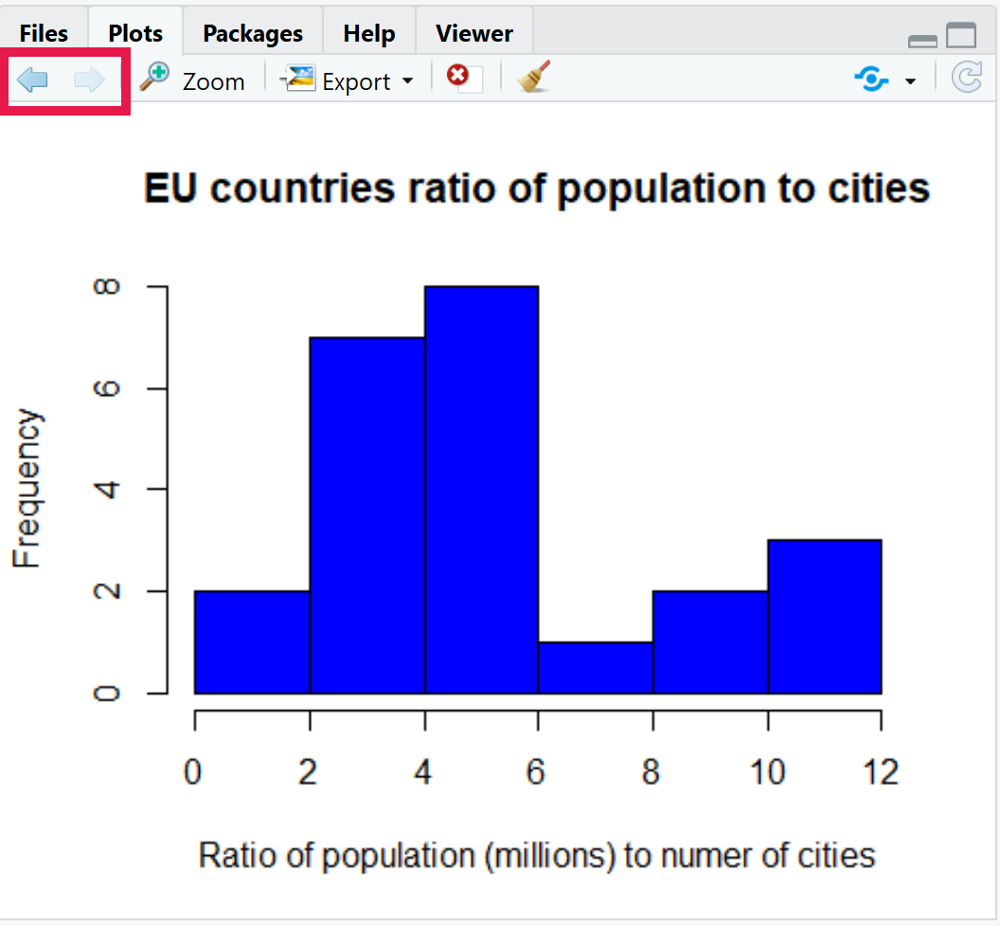

13 Histograms and Line graphs
In this chapter we will learn how to create two different types of plots; Histograms and Line graphs. I have chosen these two types of plots first as they are relatively straightforward to create.
Create and use the directory “Chapter_13-16” as the working directory for this chapter. Additionally create a new script called “Histograms_n_line_graphs.R” for this chapter.
13.1 Histogram

A histogram consists of bars showing the frequency of variables present in numbered ranges (bins). This allows you to see an approximate distribution of numerical data.
We are starting with histograms as the function hist(), which creates a histogram, only requires one vector.
The following code creates a numerical vector and then produces a histogram. When you run the hist() command a plot should appear in your “Plots” pane of the MISC window.
numeric_vec <- 1:40
hist(numeric_vec)You will notice that the histogram is not very interesting. There are 8 bars all of equal size. This is because we plotted the numbers from 1-40 so numbers 1-5 are counted in the first bar/bin, 6-10 in the second bar/bin and so forth. To get a more interesting histogram we will create a more interesting vector.
Histograms are good to see the numerical distribution of data. In this case we are going to look at the number of cities (with greater than 300,000 population) in EU countries (https://en.Wikipedia.org/wiki/List_of_cities_in_the_European_Union_by_population_within_city_limits).
The first step is to create a vector with the numbers of cities in EU countries, however we won’t know what countries these correspond to yet. Then we will create a histogram and set the colour of the bars with the option col =.
eu_cities <- c(1, 1, 3, 1, 2,
2, 1, 1, 6, 22,
2, 1, 1, 10, 1,
1, 4, 9, 1, 7,
1, 12, 3)
hist(eu_cities, col = "orange")With that histogram we can see that most EU countries have 1-5 cities with a few having a much larger amount. As most of the time you will not be working with just vectors let us make a data frame containing the number of EU cities and the population of the EU countries.
The population numbers will be in millions to the closest 1 decimal place and consist of the 2020 Eurostat figures from: https://en.Wikipedia.org/wiki/List_of_European_Union_member_states_by_population
eu_country_names <- c("Austria", "Belgium", "Bulgaria", "Croatia", "Czech Republic",
"Denmark", "Estonia", "Finland", "France", "Germany",
"Greece", "Hungary", "Ireland", "Italy", "Latvia",
"Lithuania", "Netherlands", "Poland", "Portugal", "Romania",
"Slovakia", "Spain", "Sweden")
eu_pop <- c(8.9, 11.5, 7.0, 4.1, 10.7,
5.8, 1.3, 5.5, 67.1, 83.2,
10.7, 9.8, 5.0, 60.2, 1.9,
2.8, 17.4, 38.0, 10.3, 19.3,
5.5, 47.3, 10.3)
eu_df <- data.frame(eu_cities,eu_pop,
row.names = eu_country_names)We will quickly create a histogram for the population numbers. We’ll make the bar colours purple and we’ll make the x axis label “2020 Eurostat population number in millions” with the xlab = option.
hist(eu_df$eu_pop, col = "purple",
xlab = "2020 Eurostat population number in millions")We have a similar pattern as with the number of cities (most have low numbers, some high numbers).
We can quickly check if the countries with the high number of cities also have the high populations by creating a new column equal to population / number of cities. This will give us nice ratios. We can plot the distribution of these ratios in a histogram.
For this histogram we will also add a title to the plot with the option main =. Additionally we will choose a different colour. Having different colours and main titles makes it easier for you to instantly know which plot you are looking at.
#Create ratio column
eu_df$pop_cities_ratio <- eu_df$eu_pop / eu_df$eu_cities
#Histogram of ratio distribution
hist(eu_df$pop_cities_ratio, col = "blue",
xlab = "Ratio of population (millions) to numer of cities",
main = "EU countries ratio of population to cities")Looking at the plot most countries seem to have a ratio of 2-6 million citizens to every city. However, it is still not a perfect match with some lower and some higher ratios. Of course a result is a result and we have hopefully found out something new.
Before we go onto line graphs I’ll show you how to look at your previous plots. In the Plots pane of the MISC window there are two arrows on the top left. You can use these to go backwards and forwards between the plots you have created since you opened RStudio. Give it a go!

13.2 Line graphs
Line graphs are perfect for showing change over time. Knowing this we’ll go back to a data set we have touched before, the file “UK_retail.tsv” from Chapter 8. This file showed the success of four different retail sectors in the UK from September 2017 to September 2020.
13.2.1 Read in data
First step is to read in the data from the “Chapter_8_files” directory. Once the data frame is created we will remove all non 2020 information.
Note: The ../ below represents going up one directory. I.e. going up from your current working directory (“Chapter_13-16”) to the main directory so it can be directed to “Chapter_8_files”.
retail_df <- read.csv("../Chapter_8_files/UK_retail.tsv",
sep = "\t", row.names = 1,
check.names = FALSE)
retail_df <- retail_df[29:37,]Before we continue have a look at the data frame and make sure you are comfortable with what it contains.
13.2.2 Plotting a line graph
We are going to plot the entire information for the Food sector. We will use the function plot() with the option type = "l". This will produce a plot of type “line” ("l").
This requires we provide a numeric vector for the x axis (option x =) and the y axis (option y =). Currently our month and year information is in the row names as strings.
Therefore before we plot the information we will create a new column called “time_point” with the numbers 1 to the number of rows. We will carry this out with the function nrow() which produces one number equal to the number of rows in the specified data frame.
We won’t use it here but the function ncol() is similar to nrow() but for the number of columns.
#Produce time_point column
retail_df$time_point <- 1:(nrow(retail_df))
#Produce line plot of the food sector over time point.
plot(y = retail_df$Food, retail_df$time_point, type = "l")13.2.3 Adding lines to a plot
This is looking decent but you normally want more than one line in a line graph. Thankfully we can do this with the function lines(). We can add the other three sectors to the line graph like below:
Tip: Remember to use tab completion to auto fill function, variable, and column names as well as for function options.
lines(y = retail_df$`Non-food`, x = retail_df$time_point)
lines(y = retail_df$`Non-store`, x = retail_df$time_point)
lines(y = retail_df$Fuel, x = retail_df$time_point)We have created the line graph with all the sectors. However all the data is not visible.
13.2.4 Axis limits
To fix this we need to make sure all the data is within the graph. When the plot() function was run it created the y limits based on the Food sector which has a minimum and maximum value of 101.5 and 111.3. Unfortunately the other sectors barely fit in this range.
To prevent this issue we can use the plot() option of ylim =. This option is provided with a vector of 2 numbers. The first number is where the y axis will start. The second number is where the y axis will end.
To find out where the y axis will end we will use the max() function. This will give one number which is equal to the highest number found in a numeric object. This object can be a scalar, vector, or a data frame.
We will use the function min() just like max() to find where the y axis should start.
Let us therefore recreate the plot with an appropriate y axis range.
Note: Some times it is more appropriate to set values for the y limits (i.e. starting the y axis at 0). In this case 100 is the baseline value so it would be inappropriate to start at 0.
Tip: Copying your past code in the script editor and editing it will make the following examples a lot quicker to carry out.
#Minimum and maximum for y axis
#Provide the function a subset of the retail_df
#so it is not using the time_point column
min_y <- min(retail_df[,1:4])
max_y <- max(retail_df[,-5])
#Produce line plot of the food sector over time point.
#Set y limits (min,max)
plot(y = retail_df$Food, retail_df$time_point, type = "l",
ylim = c(min_y,max_y))
#Add lines
lines(y = retail_df$`Non-food`, x = retail_df$time_point)
lines(y = retail_df$`Non-store`, x = retail_df$time_point)
lines(y = retail_df$Fuel, x = retail_df$time_point)Great! That is much better. We can now see that two lines fall after time_point 2 whilst one increases.
13.2.5 Axis labels
Numbers on the x axis are not ideal in this case. We will therefore use the axis() function to set our own x axis labels. We will use the following options for this:
1: The first option toaxis()indicates the location of the axis labels.1indicates they will be located on the x axis (below).at = retail_df$time_point: This indicates where the points tic marks will be drawn.labels = row.names(retail_df): A character vector for the labels to be placed at the tick marks.
For more info for axis() run the command ?axis to see its help page.
To use the axis() function correctly we need to make sure there are no preexisting labels and tick marks on the x axis or else the new labels will go on top of the old. To do this we provide the plot() function with the option xaxt ='n', i.e. no x axis ticks.
#Produce line plot of the food sector over time point.
#Ensure x axis ticks and labels are not displayed
plot(y = retail_df$Food, retail_df$time_point, type = "l",
ylim = c(min_y,max_y), xaxt = 'n')
#Add row names (month and date strings) as x axix labels
axis(1, at = retail_df$time_point, labels = row.names(retail_df))
#Add lines
lines(y = retail_df$`Non-food`, x = retail_df$time_point)
lines(y = retail_df$`Non-store`, x = retail_df$time_point)
lines(y = retail_df$Fuel, x = retail_df$time_point)When the plot is generated there may be only some labels showing for the x axis. If you would like to show them all increase the size of the MISC window.
13.2.6 Plot titles
Before we colour the lines different colours, let us add a main title and provide the x and y axis with better titles.
#Produce line plot of the food sector over time point.
#Add main, x, and y titles
plot(y = retail_df$Food, retail_df$time_point, type = "l",
ylim = c(min_y,max_y), xaxt = 'n',
main = "Performance of UK retail sectors over 2020",
ylab = "Seasonally adjusted volume sales",
xlab = "Month and Year")
#Add row names (month and date strings) as x axix labels
axis(1, at = retail_df$time_point, labels = row.names(retail_df))
#Add lines
lines(y = retail_df$`Non-food`, x = retail_df$time_point)
lines(y = retail_df$`Non-store`, x = retail_df$time_point)
lines(y = retail_df$Fuel, x = retail_df$time_point)13.2.7 Line colours
Next we will colour the lines differently to differentiate the retail sectors. We carry this out with the col = options for plot() and lines().
#Produce line plot of the food sector over time point.
#Include the colour red for the bars
plot(y = retail_df$Food, retail_df$time_point, type = "l",
ylim = c(min_y,max_y), xaxt = 'n',
main = "Performance of UK retail sectors over 2020",
ylab = "Seasonally adjusted volume sales",
xlab = "Month and Year",
col = "red")
#Add row names (month and date strings) as x axix labels
axis(1, at = retail_df$time_point, labels = row.names(retail_df))
#Add lines with different colours
lines(y = retail_df$`Non-food`, x = retail_df$time_point, col = "blue")
lines(y = retail_df$`Non-store`, x = retail_df$time_point, col = "green")
lines(y = retail_df$Fuel, x = retail_df$time_point, col = "purple")13.2.8 Plot legend
We are almost there! The one thing we are missing now is a legend so we can quickly see what colour represents what sector.
This can be carried out by using the function legend() after the plot is created. In this case the function is run with the following options:
x = "topleft": The legend will be placed in the top left of the plot.legend = colnames(retail_df[,1:4]): This dictates the labels that will be in the legend.col = c("red","blue","green","purple"): This indicates the matching colours for the labels.lty = 1: This indicates that the colours will be presented as lines of type 1.
legend(x = "topleft",
legend = colnames(retail_df[,1:4]),
col = c("red","blue","green","purple"),
lty = 1)That is a good amount to go through. The next chapter will go into scatter plots and box plots. If you have time read through the above again and possibly try to create a histogram or line plot with one of the data sets from previous chapters.